第7世代（アローラ地方）ポケモンの英語名一覧
全88匹の英語名と由来
第7世代（アローラ地方）のポケモン88匹の英語名を、図鑑番号順にまとめました。名前を押すと、英語版図鑑の説明文と日本語訳、英語名の由来が見られます。
| No. | 日本語名 | 英語名 | 英語名の由来 |
|---|---|---|---|
| 722 | Rowlet | root（根）、round（まるい）、arrow（矢）とowlet（フクロウの子） | |
| 723 | 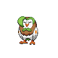 フクスロー | Dartrix | dart（投げ矢）、Strix（フクロウ属）とtricks（いたずら） |
| 724 | 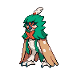 ジュナイパー | Decidueye | deciduous（落葉性の）、duel（決闘）、deadeye（射撃の名手）とBullseye（的の中心） |
| 725 | Litten | lit（灯った）、little（小さい）とkitten（子猫） | |
| 726 | Torracat | torrid（灼熱の）、torrar（スペイン語で「焼く」）とcat（猫） | |
| 727 | 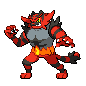 ガオガエン | Incineroar | incinerate（焼きつくす）とroar（ほえる） |
| 728 | 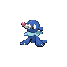 アシマリ | Popplio | sea lion pup（アシカの子）、pop（ポンとはじける）とpōpō（ハワイ語で「ボール」） |
| 729 | 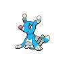 オシャマリ | Brionne | brio（元気）、sea lion（アシカ）、brine（塩水）とsissonne（バレエの跳躍の技） |
| 730 | Primarina | prima donna（主役の歌姫）、marina（マリーナ）とballerina（バレリーナ） | |
| 731 | Pikipek | picus（キツツキ属）、pick（つるはし）とpeck（つつく） | |
| 732 | 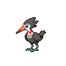 ケララッパ | Trumbeak | trumpet（ラッパ）とbeak（くちばし） |
| 733 | 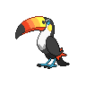 ドデカバシ | Toucannon | toucan（オオハシ（鳥））とcannon（大砲） |
| 734 | Yungoos | young（若い）とmongoose（マングース） | |
| 735 | Gumshoos | gumshoe（探偵）とmongoose（マングース） | |
| 736 | 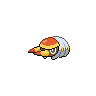 アゴジムシ | Grubbin | grub（幼虫）とgrubbing（掘り返す） |
| 737 | Charjabug | charge（突進）、charger（軍馬）とbug（虫） | |
| 738 | 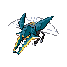 クワガノン | Vikavolt | Vic Viper（ゲーム『グラディウス』の自機ビックバイパー）とvolt（ボルト（電圧の単位）） |
| 739 | Crabrawler | crab（カニ）とbrawler（けんか好き） | |
| 740 | Crabominable | crab（カニ）とabominable snowman（雪男） | |
| 741 | Oricorio | oriole（コウライウグイス）とchoreography（振り付け） | |
| 742 | Cutiefly | cutie（かわいい子）とfly（飛ぶ） | |
| 743 | Ribombee | ribbon（リボン）、Bombyliidae（ツリアブ科）とbee（ハチ） | |
| 744 | Rockruff | rock（岩）、ruff（えり飾り）、ruffle（ひだ飾り）とrough（荒い） | |
| 745 | 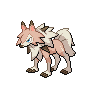 ルガルガン | Lycanroc | werewolf（オオカミ男）とrock（岩） |
| 746 | Wishiwashi | wishy-washy（はっきりしない）がもとになっていると考えられている | |
| 747 | 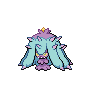 ヒドイデ | Mareanie | marine（海の）とmeanie（意地悪） |
| 748 | Toxapex | toxic（有毒な）とapex（頂点） | |
| 749 | Mudbray | mud（どろ）とbray（ロバの鳴き声） | |
| 750 | 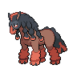 バンバドロ | Mudsdale | mud（どろ）とClydesdale（クライズデール（大型の馬）） |
| 751 | Dewpider | dew（露）、spider（クモ）とArgyrodes（イソウロウグモ属） | |
| 752 | 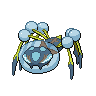 オニシズクモ | Araquanid | arachnid（クモの仲間）とaqua（ラテン語で「水」） |
| 753 | Fomantis | faux（にせの）とmantis（カマキリ） | |
| 754 | 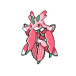 ラランテス | Lurantis | lure（ルアー）、allure（魅力）、fleur（フランス語で「花」）とmantis（カマキリ） |
| 755 | 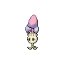 ネマシュ | Morelull | Morchella（アミガサタケ）とlull（あやす） |
| 756 | 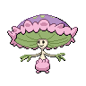 マシェード | Shiinotic | shiitake（シイタケ）、shine（輝く）とhypnotic（催眠の） |
| 757 | Salandit | salamander（サンショウウオ）とbandit（盗賊） | |
| 758 | 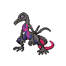 エンニュート | Salazzle | salamander（サンショウウオ）、dazzle（目をくらませる）とsizzle（ジュージュー） |
| 759 | 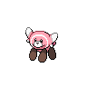 ヌイコグマ | Stufful | stuffed animal（ぬいぐるみ）、stuff（詰めこむ）とfull（いっぱいの） |
| 760 | 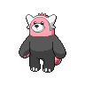 キテルグマ | Bewear | beware（用心せよ）、wear（身につける）とbear（熊） |
| 761 | 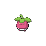 アマカジ | Bounsweet | bounce（はねる）とsweet（甘い） |
| 762 | Steenee | mangosteen（マンゴスチン）、teeny（ちっちゃい）とteenager（十代の若者） | |
| 763 | 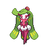 アマージョ | Tsareena | tsarina（ロシアの皇后）とmangosteen（マンゴスチン） |
| 764 | 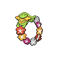 キュワワー | Comfey | comfy（心地よい）、comfort（なぐさめ）、comfrey（コンフリー（ハーブ））とfairy（妖精） |
| 765 | 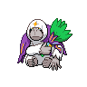 ヤレユータン | Oranguru | orangutan（オランウータン）とguru（導師） |
| 766 | 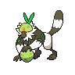 ナゲツケサル | Passimian | pass（パス）とsimian（サルの） |
| 767 | Wimpod | wimp（弱虫）とpod（分類用語で「足」） | |
| 768 | 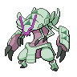 グソクムシャ | Golisopod | Goliath（巨人ゴリアテ）とisopod（等脚類（ダンゴムシなど）） |
| 769 | 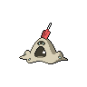 スナバァ | Sandygast | sandy（砂の）とghast（幽霊） |
| 770 | Palossand | palace（宮殿）、loss（喪失）とsand（砂） | |
| 771 | 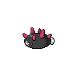 ナマコブシ | Pyukumuku | puke（吐く）、cucumber（キュウリ）とmucus（粘液） |
| 772 | 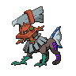 タイプ：ヌル | Type: Null | フランス語の名前は「Type:0」で、type（タイプ）、0（ゼロ）から作られている |
| 773 | 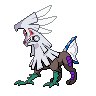 シルヴァディ | Silvally | silver（銀）とally（味方） |
| 774 | Minior | meteor（流星）がもとになっていると考えられている | |
| 775 | Komala | coma（深い眠り）とkoala（コアラ） | |
| 776 | 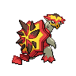 バクガメス | Turtonator | turtle（カメ）とdetonator（起爆装置） |
| 777 | 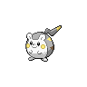 トゲデマル | Togedemaru | |
| 778 | Mimikyu | mimic（まねる）がもとになっていると考えられている | |
| 779 | 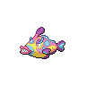 ハギギシリ | Bruxish | bruxism（歯ぎしり）とfish（魚） |
| 780 | 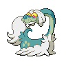 ジジーロン | Drampa | dragon（ドラゴン）とgrampa（おじいちゃん） |
| 781 | Dhelmise | demise（死）とship's wheel（船の舵輪） | |
| 782 | Jangmo-o | jangling（ジャラジャラ）とmoʻo（ハワイ語で「トカゲ、竜」） | |
| 783 | 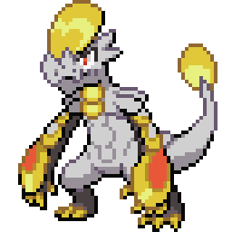 ジャランゴ | Hakamo-o | haka（ハカ（マオリ族の踊り））とmoʻo（ハワイ語で「トカゲ、竜」） |
| 784 | 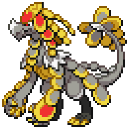 ジャラランガ | Kommo-o | commotion（騒ぎ）とmoʻo（ハワイ語で「トカゲ、竜」） |
| 785 | 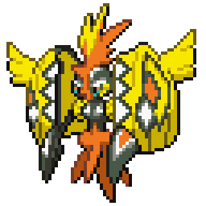 カプ・コケコ | Tapu Koko | sacred（神聖な）がもとになっていると考えられている |
| 786 | Tapu Lele | sacred（神聖な）がもとになっていると考えられている | |
| 787 | Tapu Bulu | sacred（神聖な）がもとになっていると考えられている | |
| 788 | Tapu Fini | sacred（神聖な）がもとになっていると考えられている | |
| 789 | Cosmog | cosmos（宇宙）、cosmogony（宇宙の起源）、fog（霧）とsmog（スモッグ） | |
| 790 | 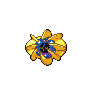 コスモウム | Cosmoem | cosmos（宇宙）、ovum（卵子）とembryo（胎児） |
| 791 | 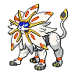 ソルガレオ | Solgaleo | sol（ラテン語で「太陽」）とleo（ラテン語で「ライオン」） |
| 792 | Lunala | luna（ラテン語で「月」）、ala（ラテン語で「翼」）とlunula（三日月形） | |
| 793 | 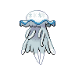 ウツロイド | Nihilego | nihil（ラテン語で「無」）、ego（自我）とI have nothing（「何も持っていない」） |
| 794 | Buzzwole | buzz（ブンブン）、bustle（にぎわい）とswole（ムキムキの） | |
| 795 | Pheromosa | pheromone（フェロモン）とhermosa（スペイン語で「美しい」） | |
| 796 | 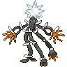 デンジュモク | Xurkitree | tree（木）がもとになっていると考えられている |
| 797 | Celesteela | celestial（天の）、steel（はがね）とstella（ラテン語で「星」） | |
| 798 | 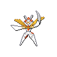 カミツルギ | Kartana | katana（刀）、art（芸術）とcharta（ラテン語で「紙」） |
| 799 | Guzzlord | guzzle（がぶ飲みする）とlord（領主） | |
| 800 | 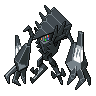 ネクロズマ | Necrozma | νεκρός nekrós（ギリシャ語で「死者」）、πρῖσμα prîsma（ギリシャ語で「プリズム」）とplasma… |
| 801 | Magearna | machina（ラテン語で「機械」）、Mana（マナ（神秘的な力））とgear（歯車） | |
| 802 | 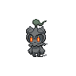 マーシャドー | Marshadow | martial arts（武術）、nightmarchers（ハワイの伝説の夜の行進する亡霊）とshadow（影） |
| 803 | 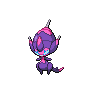 ベベノム | Poipole | poison（毒）とpole（さお） |
| 804 | Naganadel | Nāga（インド神話の蛇神ナーガ）とNadel（ドイツ語で「針」） | |
| 805 | 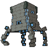 ツンデツンデ | Stakataka | stack（積み重ね）とattack（攻撃） |
| 806 | 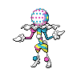 ズガドーン | Blacephalon | blast（爆風）とencephalon（脳） |
| 807 | Zeraora | Zeus（ギリシャ神話の主神ゼウス）がもとになっていると考えられている | |
| 808 | 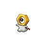 メルタン | Meltan | melt（溶ける）とmetal（金属） |
| 809 | Melmetal | melt（溶ける）とmetal（金属） |